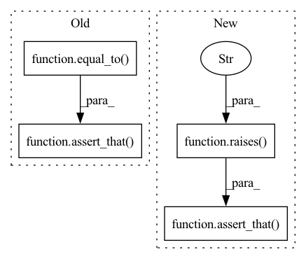

Pattern ID :12410

Before Change
formatter = ClassificationLabelFormatter(lambda x: [x, x])
err = formatter.validate_label(two_tuples_dataloader)
assert_that(err, equal_to("Check requires classification label to be a torch.Tensor or numpy array"))
def numpy_shape_dataloader(shape: tuple = None, value: Union[float, np.array] = 1, collate_fn=None):
After Change
formatter = ClassificationLabelFormatter(lambda x: [x, x])
// Assert
assert_that(calling(formatter.validate_label).with_args(next(iter(two_tuples_dataloader))),
raises(DeepchecksValueError,
"Check requires classification label to be a torch.Tensor or numpy array"))
def test_data_formatter_not_iterable():
formatter = ImageFormatter(lambda x: x)
In pattern: SUPERPATTERN
Frequency: 3
Non-data size: 4
Instances
Fragment ID: 42221744
Project Name: deepchecks/deepchecks
Commit Name: d25643eec1b5788ae47774a0b7a4f49a472b23e6
Time: 2022-02-20
Author: matan@deepchecks.com
File Name: tests/vision/utils_tests/formatters_test.py
M Class Name: AnonimousClass
N Class Name: AnonimousClass
M Method Name: test_classification_formatter_formatting_invalid_label_type(1)
N Method Name: test_classification_formatter_formatting_invalid_label_type(1)
M Parent Class:
N Parent Class:
M File Name: tests/vision/utils_tests/formatters_test.py
N File Name: tests/vision/utils_tests/formatters_test.py
M Start Line: 41
M End Line: 42
N Start Line: 52
N End Line: 54
'>
Before Change
assert_that(caplog.records[0].message, contains_string(" seconds, but timeout was configured to 0 seconds"))
// Assert
assert_that(feature_importances.sum(), equal_to(1))
assert_that(fi_type, is_("feature_importances_"))
def test_calculate_importance_force_permutation_fail_on_dataframe(iris_split_dataset_and_model, caplog):
After Change
train_ds, _, adaboost = iris_split_dataset_and_model
// Assert
assert_that(calling(_calculate_feature_importance)
.with_args(adaboost, train_ds, force_permutation=True, permutation_kwargs={"timeout": 0}),
raises(DeepchecksTimeoutError, "Skipping permutation importance calculation"))
def test_calculate_importance_force_permutation_fail_on_dataframe(iris_split_dataset_and_model):
// Arrange
'>
Fragment ID: 42221745
Project Name: deepchecks/deepchecks
Commit Name: 90f0e925d46a2dc9aad13022e9f7d3555ff5a572
Time: 2022-07-26
Author: 92314933+nirhutnik@users.noreply.github.com
File Name: tests/base/feature_importance_utils_test.py
M Class Name: AnonimousClass
N Class Name: AnonimousClass
M Method Name: test_calculate_importance_force_permutation_fail_on_timeout(1)
N Method Name: test_calculate_importance_force_permutation_fail_on_timeout(2)
M Parent Class:
N Parent Class:
M File Name: tests/base/feature_importance_utils_test.py
N File Name: tests/base/feature_importance_utils_test.py
M Start Line: 114
M End Line: 128
N Start Line: 117
N End Line: 119
'>
Before Change
"feature importance, please use the Dataset object."))
// Assert
assert_that(feature_importances.sum(), equal_to(1))
assert_that(fi_type, is_("feature_importances_"))
def test_calculate_importance_when_no_builtin_and_force_timeout(iris_labeled_dataset):
After Change
df_only_features = train_ds.data.drop(train_ds.label_name, axis=1)
// Assert
assert_that(calling(_calculate_feature_importance)
.with_args(adaboost, df_only_features, force_permutation=True, permutation_kwargs={"timeout": 120}),
raises(DeepchecksValueError, "Cannot calculate permutation feature importance on a pandas Dataframe"))
def test_calculate_importance_when_no_builtin_and_force_timeout(iris_labeled_dataset):
// Arrange
'>
Fragment ID: 42221746
Project Name: deepchecks/deepchecks
Commit Name: 90f0e925d46a2dc9aad13022e9f7d3555ff5a572
Time: 2022-07-26
Author: 92314933+nirhutnik@users.noreply.github.com
File Name: tests/base/feature_importance_utils_test.py
M Class Name: AnonimousClass
N Class Name: AnonimousClass
M Method Name: test_calculate_importance_force_permutation_fail_on_dataframe(1)
N Method Name: test_calculate_importance_force_permutation_fail_on_dataframe(2)
M Parent Class:
N Parent Class:
M File Name: tests/base/feature_importance_utils_test.py
N File Name: tests/base/feature_importance_utils_test.py
M Start Line: 131
M End Line: 146
N Start Line: 125
N End Line: 130